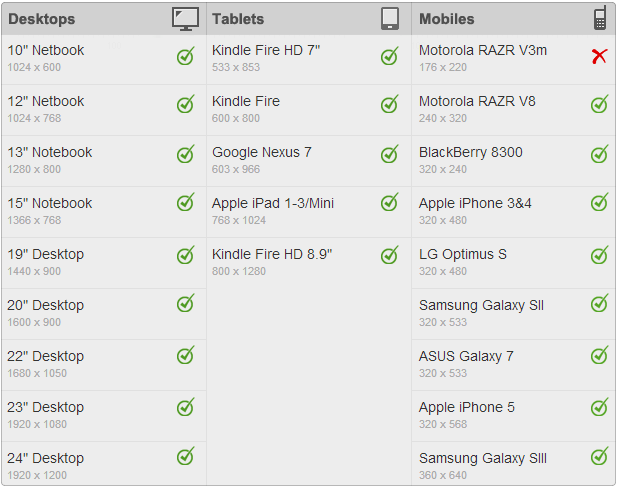

说明： 更多SmartAdmin信息请访问网址 https://wrapbootstrap.com/theme/smartadmin-responsive-webapp-WB0573SK0。
文档 > 版本信息
项目属性
| 版本号 | 1.4.2 |
|---|---|
| Bootstrap | 3.2.x 版本 |
| 布局 | Fixed-width Fluid Responsive |
| 兼容浏览器 |
Internet Explorer 10 Internet Explorer 11 Internet Explorer 9 Latest Chrome Latest Firefox Latest Opera Latest Safari |
| 使用LESS | 是 |
| 支持版本 | HTML Version AJAX Version PHP version AngularJS version |
| 使用SASS | 是 |
主要特点
| 英文 | 中文 |
|---|---|
| Carefully hand coded from head to toe | 从头到尾手工编码 |
| Contains neatly organized and commended HTML, JS and LESS files (unminified CSS files available) | 包括有条理有组织、受到赞同的HTML 、JS 和 LESS文件（非压缩的CSS文件） |
| Built with bootstrap 3.2 (contains LESS files for the Custom BS Build) | 借助于bootstrap 3.2创建（包括自定义的LESS文件） |
| Retina Graphs and Icons | 支持Retina屏的图片和图标 |
| w3 valid cross browser compatible HTML5 markup | 能兼容各浏览器的HTML5标签 |
| Unique, never seen before, localStorage Widgets (Jarvis Widget 2.0) with custom controls for the users (now includes a robust API) | 用户自己控制的localStorage Widgets (Jarvis Widget 2.0)功能 |
| 6 Level responsive navigation | 6级响应菜单 |
| Scales to almost any size (Fluid/Responsive/Boxed and Container) | 适应任何尺寸（Fluid/Responsive/Boxed and Container） |
| Two different navigation options (horizontal or vertical - no DOM changes required to switch between the two) | 水平和垂直两种菜单选择，没有DOM变化只需要在两者之间切换。 |
| CSS3 Animated | CSS3动画效果 |
| Modern Form Elements (jQuery select2, colorpicker, datepicker, validation, iDevice buttons and wizard) | 现代型表单元素（jQuery select2, colorpicker, datepicker, validation, iDevice buttons 和 wizard） |
| Professional Design and Branding (includes matching email templates [non-Bootstrap]) | 专业的设计和品牌（包括电子邮件模版［非Bootstrap］） |
| Unique menu API that can be collapsed, or hidden (show on hover). Menu also adapts on mobile phones very swiftly. | 独特的可以折叠、隐藏菜单的API（当hover时出现）。并且在智能手机上，菜单可以灵活调整。 |
| Unique Google Map Skins (7 in total) | 独特的谷歌地图皮肤（共7种） |
| Google like Gallery with data-attribute descriptions | 类似于Google图片的画廊，用data-*属性控制。 |
| Smart Alert and Smart Notification with sound | 附带声音的智能警示框和通知框 |
| Dynamic Data Table with export to PDF/Excel | 附带导出（PDF/Excel格式）功能的动态数据表 |
| Smart Form elements (built on top of bootstrap library for robust form development) | 智能表单（创建于bootstrap之上） |
| AJAX pages (pages are pulled in and scripts are loaded on request per page) | AJAX页面（发出请求时，页面和脚本才会加载） |
| Also contains a Clean HTML Version, Advanced PHP Version, and AngularJS Version with Grunt Tasks | HTML简洁版、PHP提高版和AngularJS版本。 |
| Detailed Documentation http://bootstraphunter.com/smartadmin/BUGTRACK/track_/documentation/index.html | 详细访问该网址 http://bootstraphunter.com/smartadmin/BUGTRACK/track_/documentation/index.html |
特殊功能
| 英文 | 中文 |
|---|---|
| Functional Inbox page (all you will need to do is code the backend) | 功能型收件箱页面 |
| Sparkline, Easy Pie Charts and various important form elements are controlled by data-*attributes | 折线图表、简单的饼状图和各种有data-*属性控制的表单。 |
| Fully functional Calendar with Add event with color, description and icon | 能增加图标和不同颜色背景事件描述的全功能日历。 |
| Lighter pages (page scripts/plugins are loaded with a lazy load technique via ajax) | 轻量级页面（通过ajax技术加载页面） |
| Breadcrumbs are built automatically | 自动创建导航路径 |
| Various button types and colors | 各种类型、各种颜色的按钮 |
| Custom tree view | 自定义树视图 |
| Jquery UI Compatible | 兼容jQuery UI |
布局的API
| 英文 | 中文 |
|---|---|
| Collapse Navigation (show on hover) | 折叠导航菜单（鼠标放到隐藏菜单的位置，菜单就会重新显示出来。） |
| Fixed header, ribbon and navigation | 冻结页头、路径标签和导航菜单功能 |
| Minified navigation - minifies the navigation to show only icons, reveals children on parent hover. | 导航菜单最小化－导航菜单仅显示图标，鼠标放在图标上，显示菜单内容。 |
| metro type shortcut dropdown (click the username to show) | 快捷列表（点击用户名出现） |
分辨率支持（适用于手机、平板和PC设备）
图片展示